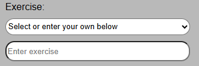
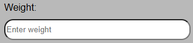
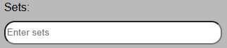
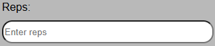

ホームページで、鍛えたい筋肉に応じてワークアウトを選びましょう。
ターゲットとする筋肉を選択した後、本日の日付を入力します。
ここでエクササイズを選びます。ドロップダウンメニューを開いて選択してください。予定しているエクササイズがリストにない場合は、下のフィールドに手動で入力できます。残りの項目を入力して「ワークアウトを追加」ボタンを押すと、手動で入力したエクササイズも次回からドロップダウンに表示されるようになります。
持ち上げる重量を入力してください。残りの項目を入力して「ワークアウトを追加」ボタンを押すと、重量が記録されポンド（lbs）で表示されます。言語設定を「日本語」に変更している場合は、重量がキログラム（kg）で表示されます。
このエクササイズで行う予定のセット数を入力してください。
1セットあたりに行う反復回数（レップ数）を入力してください。
「ワークアウトを追加」ボタンを押すと、入力したエクササイズ情報が下に表示されます。この作業を行ったエクササイズごとに繰り返すことで、ワークアウト全体が記録されます。「ワークアウト履歴」ボタンを押すと、日付順に過去のワークアウトを確認できます。